源码包能直接看到源码，安装时需要人为手工设置安装位置，一般是/usr/local/软件名/。源码包的升级版——脚本安装包，人为的改动源码使其有安装界面。
优点：
①、开源，如果有足够的能力，可以直接修改源代码。
②、安装时可以自由选择所需的功能。
③、软件是编译安装，所以更加适合自己的系统，更加稳定也效率更高。
④、卸载方便，直接删了你安装软件的那个目录就好了。
缺点：
①、安装步骤较多，尤其安装较大的软件集合时，容易出现拼写错误。
②、编译时间过长，比后面讲的二进制安装时间长。
③、因为是编译安装，安装过程中一旦报错新手很难解决。
二进制包最要包括centos中的rpm包。rpm包有默认安装位置。
/etc/：配置文件安装目录；
/usr/bin/：可执行的命令安装目录；
/usr/lib/：程序所使用的函数库保存位置；
/usr/share/doc/：基本的软件使用手册保存位置；
/usr/share/man/：帮助文件保存位置。
优点：
①、包管理系统简单，只通过几个命令就可以实现包的安装、升级、查询和卸载。
②、安装速度比源码包快很多。
缺点：
①、已经经过编译了，看不到源代码。
②、功能选择不如源代码包灵活。
③、安装过程中有很多依赖的包，依赖性不好解决。
rpm包属于二进制包。
我们打开前面安装Linux系统的安装文件CentOS-xx.iso。在package目录下都是rpm安装文件。
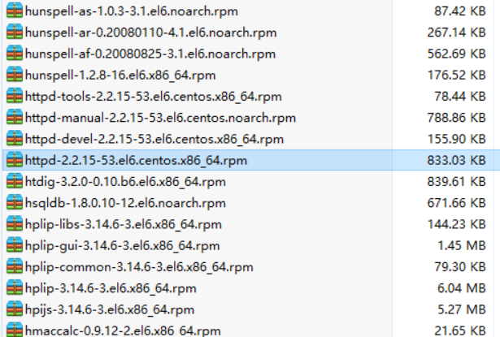
以httpd-2.2.15-53.el6.centos.x86_64.rpm 文件为例来看rpm包的命名规则。
①、httpd:软件包名
②、2.2.15：软件版本
③、15：软件发布的次数
④、el6.centos：适合的Linux平台
⑤、x86_64：适合的硬件平台，这里表示64位。
⑥、rpm：rpm包的扩展名，注意Linux是没有扩展名的概念，这里是告诉管理员这是一个rpm包文件。
语法：rpm -ivh 【包名】
-i：install，安装。
-v：verbose，显示详细信息。
-h：hash，显示安装进度。
--nodeps：不检测依赖性。
例子：rpm -ivh httpd-2.2.15-53.el6.centos.x86_64.rpm，安装 httpd-2.2.15-53.el6.centos.x86_64.rpm。
注意：这种安装方法可能需要先安装各种依赖，安装过程繁琐。
语法：rpm -Uvh 【包名】
-U：upgrade，升级。
语法：rpm -e 【包名】
-e：eras：卸载。
--nodeps：不检测依赖性。
语法：rpm -qa 【包名】
-q：query，查询。
-a：all，所有。
例子：rpm -qa httpd
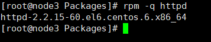
语法：rpm -qip 【包名】
-q：query，查询。
-i：information，信息。
-p：package，显示包名。
例子：rpm -qi httpd
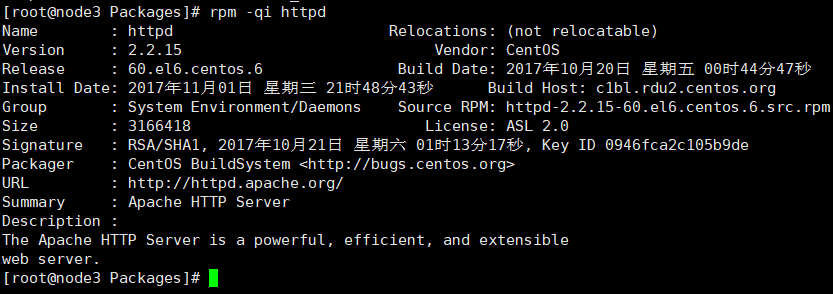
语法：rpm -ql 【包名】
-q：query，查询。
-l：list，列表。
例子：rpm -ql httpd
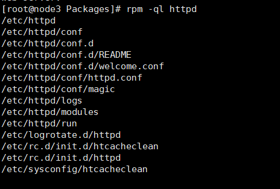
语法：rpm -qf 【系统文件名】
-f：file，系统文件属于哪个软件包。
语法：rpm -qR 【包名】
-R：requires，查询软件包的依赖性。
yum（全称为 Yellow dog Updater, Modified）是一个在Fedora和RedHat以及SUSE中的Shell前端软件包管理器。基于RPM包管理，能够从指定的服务器自动下载RPM包并且安装，可以自动处理依赖性关系，并且一次安装所有依赖的软体包，无须繁琐地一次次下载、安装。yum提供了查找、安装、删除某一个、一组甚至全部软件包的命令，而且命令简洁而又好记。
yum管理是从指定的服务器（网络yum源）下载，所以必须要有网络或者自己手动配置一个本地yum源（不需要网络，后面会讲解如何手动配置），而且最关键的是yum能帮我们解决依赖性关系。
进入到/etc/yum.repos.d/目录：
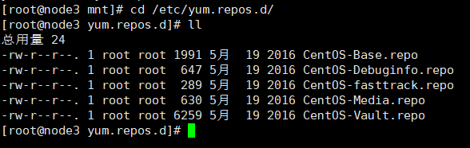
一般来讲，以.repo结尾的文件都是yum源。如果能联网，会使用CentOS-Base.repo作为默认的yum源，如果不能联网我们使用 CentOS-Media.repo 作为本地光盘yum源。
编辑vim CentOS-Base.repo
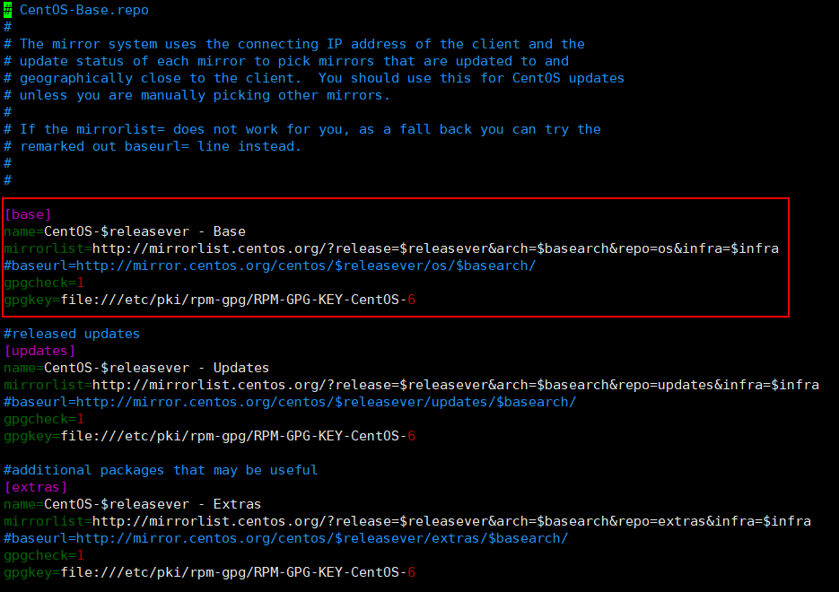
查看红色框住的内容：
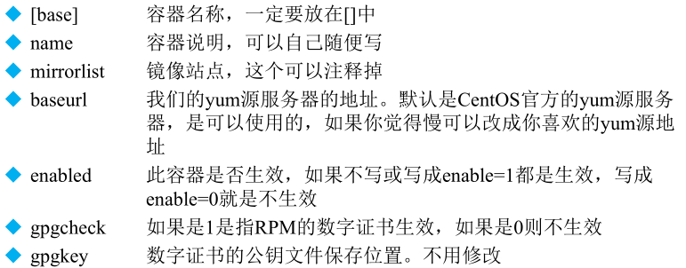
mirrorlist和baseurl的地址就是用来下载rpm包的地址，我们使用其中一个就好了。由于默认的地址都是国外的网站，如果嫌网速慢的话，可以更改为国内的yum源地址。http://mirrors.aliyun.com/repo/Centos-7.repo
1# CentOS-Base.repo2#3# The mirror system uses the connecting IP address of the client and the4# update status of each mirror to pick mirrors that are updated to and5# geographically close to the client. You should use this for CentOS updates6# unless you are manually picking other mirrors.7#8# If the mirrorlist= does not work for you, as a fall back you can try the 9# remarked out baseurl= line instead.10#11#12 13[base]14name=CentOS-$releasever - Base - mirrors.aliyun.com15failovermethod=priority16baseurl=http://mirrors.aliyun.com/centos/$releasever/os/$basearch/17 http://mirrors.aliyuncs.com/centos/$releasever/os/$basearch/18 http://mirrors.cloud.aliyuncs.com/centos/$releasever/os/$basearch/19gpgcheck=120gpgkey=http://mirrors.aliyun.com/centos/RPM-GPG-KEY-CentOS-721 22#released updates 23[updates]24name=CentOS-$releasever - Updates - mirrors.aliyun.com25failovermethod=priority26baseurl=http://mirrors.aliyun.com/centos/$releasever/updates/$basearch/27 http://mirrors.aliyuncs.com/centos/$releasever/updates/$basearch/28 http://mirrors.cloud.aliyuncs.com/centos/$releasever/updates/$basearch/29gpgcheck=130gpgkey=http://mirrors.aliyun.com/centos/RPM-GPG-KEY-CentOS-731 32#additional packages that may be useful33[extras]34name=CentOS-$releasever - Extras - mirrors.aliyun.com35failovermethod=priority36baseurl=http://mirrors.aliyun.com/centos/$releasever/extras/$basearch/37 http://mirrors.aliyuncs.com/centos/$releasever/extras/$basearch/38 http://mirrors.cloud.aliyuncs.com/centos/$releasever/extras/$basearch/39gpgcheck=140gpgkey=http://mirrors.aliyun.com/centos/RPM-GPG-KEY-CentOS-741 42#additional packages that extend functionality of existing packages43[centosplus]44name=CentOS-$releasever - Plus - mirrors.aliyun.com45failovermethod=priority46baseurl=http://mirrors.aliyun.com/centos/$releasever/centosplus/$basearch/47 http://mirrors.aliyuncs.com/centos/$releasever/centosplus/$basearch/48 http://mirrors.cloud.aliyuncs.com/centos/$releasever/centosplus/$basearch/49gpgcheck=150enabled=051gpgkey=http://mirrors.aliyun.com/centos/RPM-GPG-KEY-CentOS-752 53#contrib - packages by Centos Users54[contrib]55name=CentOS-$releasever - Contrib - mirrors.aliyun.com56failovermethod=priority57baseurl=http://mirrors.aliyun.com/centos/$releasever/contrib/$basearch/58 http://mirrors.aliyuncs.com/centos/$releasever/contrib/$basearch/59 http://mirrors.cloud.aliyuncs.com/centos/$releasever/contrib/$basearch/60gpgcheck=161enabled=062gpgkey=http://mirrors.aliyun.com/centos/RPM-GPG-KEY-CentOS-7mount /dev/sr0、 mnt/cdrom/
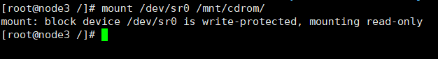
原理就是让以.repo 文件都不存在。这里我们将 /etc/yum.repos.d 目录下的 .repo 文件都重命名为.repo.bak
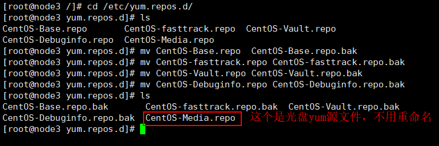
vim CentOS-Media.repo
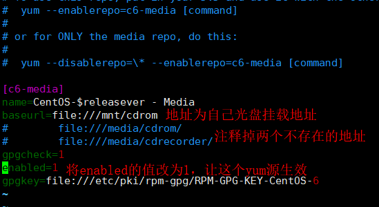
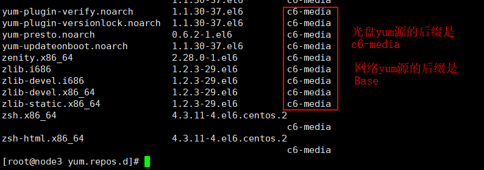
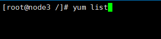
注意：此命令是在配好的yum源服务器上去查询所有可用的软件包。
例子：yum search httpd
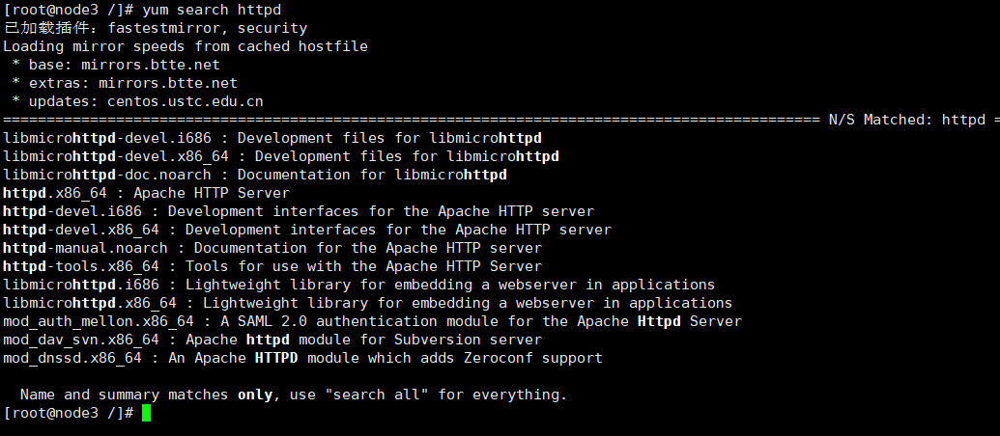
语法：yum -y install 【包名】
-y：yes，自动安装不需要确认。
例子：yum -y install gcc，安装gcc编译器。
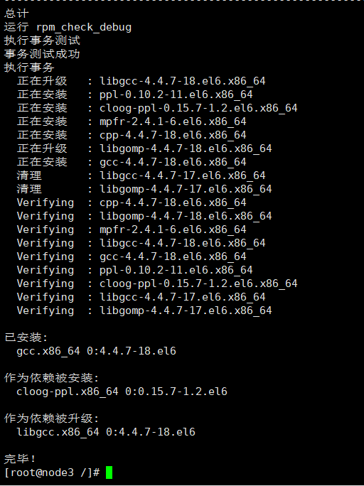
没有报错就是安装成功。
rpm -q gcc，也可以校验是否安装成功。
语法：yum -y update 【包名】
注意：如果不指定包名，那么将会升级系统中所有的软件包，包括Linux内核。而Linux内核升级之后是需要在本地进行一些配置才能开机，如果是远程连接服务器进行Linux内核升级，那么是不可能启动服务器的。
语法：yum -y remove 【包名】
注意：卸载和升级也一样，而且由于软件包很多都有依赖性，你卸载A，而B和C都依赖于A，那么B和C都会卸载。假如C和Linux某个系统软件有依赖，而C也卸载掉了，可能造成某个系统功能不能使用。所以我们在卸载软件的时候一定要注意。
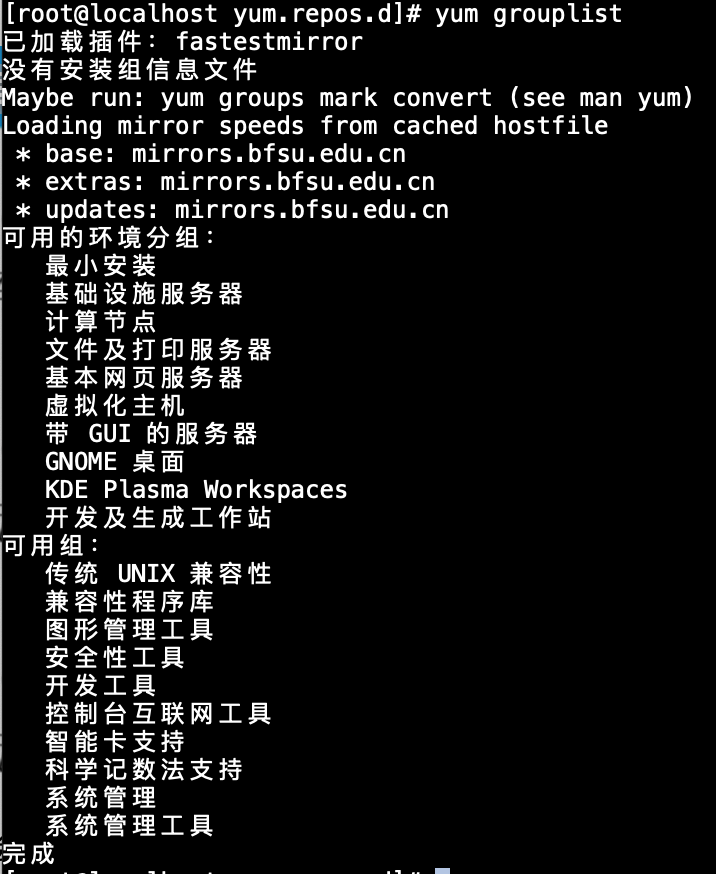
语法：yum groupinstall 【软件组名】
注意：软件组名可以通过yum grouplist查询出来
注意：这是在远程的桌面显示的是中文信息，如果直接进入服务器查询，显示的便是英文，我们需要什么直接安装即可。
语法：yum groupremove 【软件组名】
源码包：开源，可以直接修改源代码。安装时可以自由选择所需的功能。软件是编译安装，所以更加适合自己的系统，更加稳定也效率更高。卸载方便，直接删了你安装软件的那个目录就好了。但是安装步骤较多，尤其安装较大的软件集合时，容易出现拼写错误。编译时间过长，比后面讲的二进制安装时间长。因为是编译安装，安装过程中一旦报错新手很难解决。
rpm包：包管理系统简单，只通过几个命令就可以实现包的安装、升级、查询和卸载。安装速度比源码包快很多。但是由于源码已经经过编译了，看不到源代码。功能选择不如源代码包灵活。安装过程中有很多依赖的包，依赖性不好解决。
源码包与rpm包安装位置区别：
rpm包：
| 路径 | 说明 |
|---|---|
| /etc/ | 配置文件安装目录 |
| /usr/bin/ | 可执行命令安装目录 |
| /usr/lib/ | 程序使用的函数库保存位置 |
| /usr/share/doc/ | 使用手册保存位置 |
| /usr/share/man/ | 帮助文件保存位置 |
源码包：
安装位置：/usr/local/软件名/
源码包与rpm包不同的位置的影响：
rpm包：安装的服务可以使用系统服务管理命令（service）来管理。
例子：可以通过/etc/rc.d/init.d/httpd start
启动，也可以直接 service httpd start启动。
注意：service启动都是启动是通过环境变量找到绝对路径，如果安装时没有加载到环境变量中也不能使用service来启动。
源码包：只能使用绝对路径来启用。
例子：/usr/local/apache2/bin/apachectl start
linux安装gcc编译器：yum -y gcc。
下载源码包：以httpd为例，http://mirror.bit.edu.cn/apache/httpd/。
源代码建议保存位置：/usr/local/src
软件安装位置：/usr/local
如何确定安装过程报错：安装过程停止，并出现error、warning或no的提示。注意源码包安装过程一旦报错是很难解决的，需要我们去修改源码。所以从正规网站上下载别人验证过的源码包，一般是不会报错的。
将源码包放到/usr/local/src并进行解压。
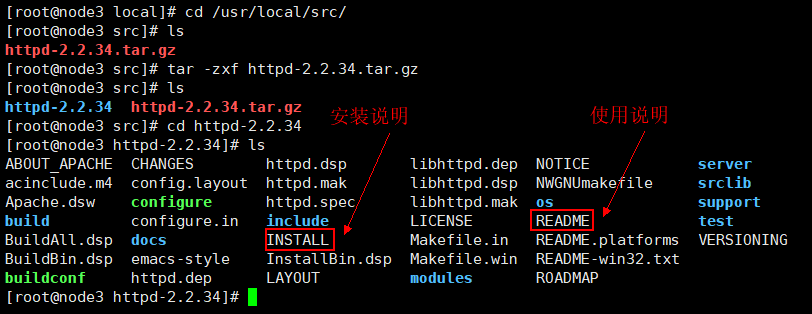
第一步： 定位到源码包根目录下，软件配置与检查 ./configure
①、定义需要的功能选项。
②、检测系统是否符合安装要求。
③、把定义好的功能选项和检测系统环境的信息都写入Makefile文件，用于后续的编辑。
11./configure --prefix=/usr/local/apache2注意：通过--prefix定义源码包安装位置，后面的apache2（由于我们通过yum已经安装了apache,所以这里命名为apache2）可以任意命名。
第二步：执行编译make，将源码包编译为机器码。
注意：这一步安装的时长取决于源码包的大小以及机器的性能。如果安装出错，可以执行make clean，清空产生的所有临时文件。
这一步执行完成之后并不会在/usr/local下生成 apache2目录。而是在httpd源码包解压目录生成了Makefile 文件。
第三步：执行make install，编译安装。
第四步：安装完成之后，启动该服务。
我们通过查看源码包解压之后的目录 INSTALL 文件，可以知道启动命令：
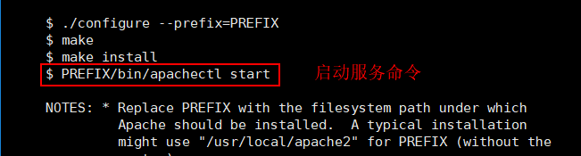
21#启动命令2/usr/local/apache2/bin/apachectl start源码包不需要额外的卸载命令，直接删除安装目录即可，不会有任何的垃圾文件遗留。
rm -rf /usr/local/apach2
系统从本质上讲只有rpm包和源码包，是没有脚本安装包的。这里说脚本安装包其实还是源码包。源码包的安装方法还是比较麻烦的。为了简化源码包的安装，人为的修改源码包，使其变成自动安装的脚本，我们只需要执行脚本定义简单的参数就能完成安装。具体解释如下：
①、脚本安装包并不是独立的软件包类型，基本上都是源码包。
②、脚本安装包是人为的把安装过程写成了自动安装的脚本，只要执行脚本，定义简单的参数，就可以完成安装。
③、脚本安装包类似于windows下软件的安装方式
Webim 是一个基于 Web 的Linux 系统管理界面，安装完成之后，就可以通过图形化的方式来设置用户账户、DNS、文件共享等服务。
第一步：下载 Webim 脚本安装包。下载地址：http://sourceforge.net/projects/webadmin/files/webmin
第二步：将下载的文件通过工具复制到Linux系统中，并解压。
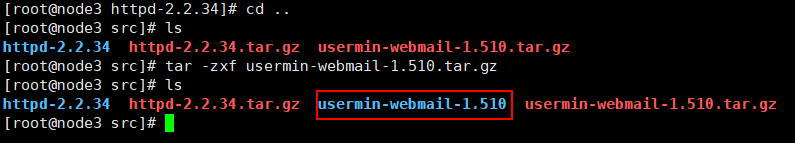
第三步：进入到解压之后的目录，并执行里面的脚本安装文件 ./setup.sh。安装成功界面如下：
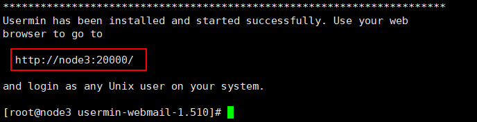
第四步：http://ip:20000，后面的端口号20000根据你安装实际情况来，进入到 Webim 操作界面。
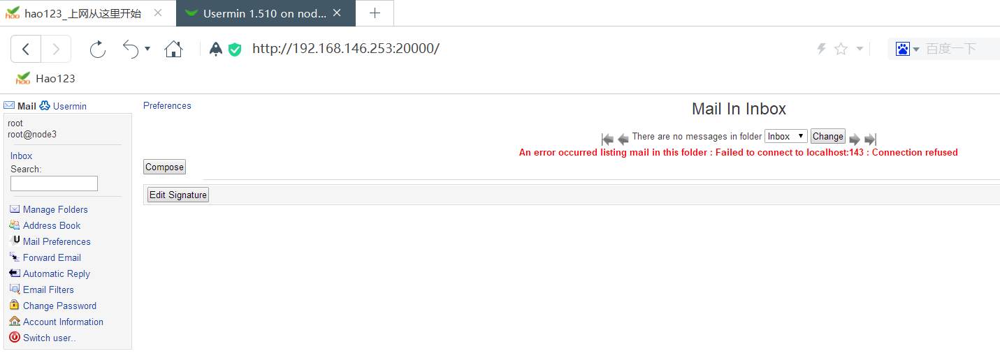